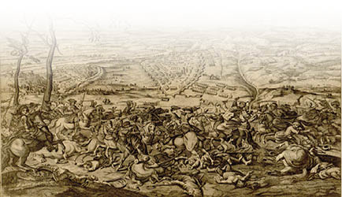
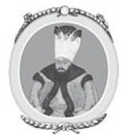

XV : Belgrat Antlaşması
1718-1739
Sultan Ahmed’in 1730 yılında tahtan çekilmesine kadar olan hükümdarlığı boyunca Avrupa ile uzun bir barış dönemi geçirildi. Damat İbrahim Paşa tekrardan göreve geldi ve sultanın en güvendiği adam olarak on iki yıl boyunca imparatorluğu yönetti. Onun da politikası kesin olarak barıştan yanaydı. Barış yıllarına sadece İran sınırında çıkan olaylar leke vurdu. Krallıkta ayaklanmalar baş gösterdi. Kuvvetsiz ve beceriksiz hükümdarı Şah Hüseyin bir Afgan spekülatörü olan Mahmud tarafından devrilmeye çalışıldı. Hüseyin’in oğlu Tahmasp Rusya çarından ve Türk sultanından krallığını kurtarmak için yardım istedi. Çar I. Petro yardım edeceğini ancak bunun karşılığı olarak Hazar Denizi ve Karadeniz’deki bölgeleri istediğini belirtti. Bölgeyi ele geçirmek için de bir ordu yolladı. Bu durum Osmanlı hükümdarlığını alarma geçirdi ve Rusya’yı savaşmakla tehdit etti. Nihayetinde savaştan kaçınıldı. 1723 yılında iki büyük güç aralarında anlaşmaya vardı ve Kuzey İran’ın büyük bir bölümü iki devlet arasında paylaşıldı. Osmanlı’nın payına Gürcistan,

Erivan, Tebriz ve Bakü düştü. Rusya ise Tahmasp’ın daha önce vadettiği bölgeler ile Şirvan’ı aldı. Rusya hemen hemen halihazırda verilen bölgelerin egemenliğini almıştı. Osmanlı ise payına düşen bölgeleri fethetmek için hemen bir ordu yolladı. Bazı başkaldırmalarla karşılaşsa da Erivan ve Tebriz ele geçirildi. Bu durum Tahmasp ile Osmanlı arasında bir gerginliğe sebep olsa da anlaşmaya varıldı. Tahmasp bölgeden atıldı ve Mahmud Osmanlı’nın bölgedeki hâkimiyetini tanıdı. Aslında bu harekâtın detaylarını vermek için çok da sıkıntıya girmeye gerek yok; çünkü birkaç yıl sonra Tahmasp’ın emriyle Nadir Han komutasında İran ordusu verdiği toprakları geri aldı.
Patrona Halil İsyanı
Yirmi yedi yıllık hükümdarlıktan sonra isyancı Yeniçerilerin başındaki Arnavut Patrona bir ayaklanma başlattı. Hızlı bir şekilde bütün orduya yayıldı, düşük seviyeli halkın da desteğini aldılar ve daha önce salınan mahkûmlar da onlara katıldı. Büyük ihtimalle veziriazamın düşmanları tarafından da desteklendi. Ayaklanmanın en başında bunu bastırmak istedi. Ahmed’den sonra gelen olaylar gösteriyor ki, Ahmed’in çok güçlü bir karakteri yoktu ve çete başlarınca tahtından kolaylıkla indirildi. İsyan güçlüydü, öncesinde akıl almaz biçimde yayılmıştı. Ayaklanmanın sultanın sevilmemesinden dolayı ortaya çıktığı ve sultanın şatafatlı hayatı ile müsriflik yapmasının da bu durumu etkilediği söylenir. Ancak bu duruma derin bir açıklama getirmek gerekir. Öne sürülen bütün sebeplerin yanında askerlerin uzun süren barış döneminden memnun olmaması ve yağmalama fırsatlarının olmaması da eklenir. Ayrıca yeni sultanın tahta gelmesiyle de büyük hediyeler beklemekteydiler. İsyanlar galip gelince yeni bir politika için üstelemediler. Sultanın kız kardeşi Hatice Sultan, ağabeyine, eğer isyanlarda kendi canına kastedecek durumlar söz konusu olursa diye vekillerini kendisine yakın tutması gerektiğini söyledi. Görünen o ki bu öneriyi dikkate aldı. Kriz anında baş yardımcısını kaybetti ve cesaretini yitirdi. Onlarla barış görüşmeleri yapmaya karar verdi. İsyancılar üç ana vekili teslim etmesini istedi. Ahmet de üç vekili ölü mü yoksa diri mi istediklerini sordu. Çok hızlı bir şekilde ölü olarak istediklerini söylediler. Bunun üzerine sultan, kızıyla evli ve çok yakın dostu olan veziriazam ile kaptan paşa ve kahyayı acımasızca boğdurdu ve ölü bedenlerini isyancılara verdi. Ancak bu Yeniçeriler için yeterli olmadı. Sultanın tahtan indirilmesini istediler. Ahmet de kendi ve çocuklarının canlarının bağışlanması koşulu ile tahtan çekilmeyi teklif etti. Yeniçeriler bu durumu kabul etti. Daha sonra Ahmet yeğeni Mahmud’u çağırtarak onu padişah ilan etti ve önünde eğilerek eteğini öptü. Bütün hayatını inzivada geçiren Mahmud gün ışığına çıktı.

I. Mahmud
II. Mustafa’nın oğlu olan Mahmud otuz dört yaşında tahta çıktı. II. Mustafa’nın ona yaptığı gibi Ahmed, Mahmud’a cömertlik göstermemişti; ancak kendisi inzivayı hapiste geçirmeyi istemişti. En iyi yıllarını kapalı bir şekilde geçiren Mahmud devletin başına geçerek aktif görevde yer alacak kadar tecrübeli değildi. Edebiyata karşı ilgi duyuyordu ve okullara, halk kütüphanelerine büyük önem verdi ancak devletin diğer ilişkileri açısından son derece yetersizdi. Hareminin başında bulunan ve sultanın kâtibi gibi davranan Kızlarağası Beşir’in etkisi altına girdi. Beşir Etiyopyalı bir köleydi ve sultanın sarayına otuz kuruşa satın alınarak getirildi. Bu adamın kişiliği hakkında çok az şey biliniyor, Harem’in kapalı kapıları ardından otuz yıl boyunca büyük bir gücü yönetti, ileri yaşlarında da vefat etti. Ardında otuz milyon kuruş ve paha biçilemez bir hazine bıraktı. Hazinede sekiz bin adet saat, değerli taşlardan takı setleri vardı, bu hediyelerin atama almak isteyenlerden geldiği düşünülüyor. Beşir kendi isteğince birini veziriazam yapabilir ya da görevden alabiliyordu. Eğer biri Beşir’in işlerine karışmasından dolayı şikâyetçi oluyorsa o kişinin görevine hızlıca son veriliyordu. Mahmud’un yirmi dört yıllık hükümdarlığında tam tamına altmış adet Veziriazam değiştirildi. Her durumda Mahmud’un başarılı hükümdarlığı ve istikrarlı politikası tamamen yaşlı hadım sayesinde oluşmuştur.
Yeni sultanın ilk hükümdarlık günlerinde bütün güç isyancı Yeniçerilerin başında bulunan ve diğerleri gibi asker olan Patrona ve Massuli’nin elindeydi. Bu adamlar gösterdikleri kabadayılık ve küstahlık yüzünden tahammül edilemez duruma gelmişlerdi. Patrona cariyesini sultanın saraylarından birine yerleştirdi ve cariye doğum yaptığında, Valide Sultan’dan cariyesine sanki bir soyluymuş gibi hürmet edilmesini istedi. Ayrıca daha önceleri kendisine para veren çok yakın arkadaşı Yunanlı bir kasap olan Yanaki’nin atanarak Moldavya Prensi olmasını istedi. Sultan bu adamlardan kurtulması gerektiğini anladı. Ahmed’in tahtan indirilmesinde yardımcı olan Yeniçerilere ve diğer askerlere daha iyi bir ruh haline girmeleri için yüklü miktarda para dağıtıldı. İsyan çıkardıkları için kesinlikle ceza almamaları kaidesiyle başlarında bulunan generale itaat etmeye söz verdiler. Patrona ile Massuli ve yirmi bir yandaşı sarayda vekillerle görüşmek üzere toplandı, sultanında katıldığı toplantıda hepsi öldürüldü. Bu olayı takiben üç gün içersinde isyan eden bütün Yeniçeriler öldürüldü.
İsyanın kontrol altına alınması bütün şehri etkiledi ve bütün ilgi İran’a çevrildi. Rusya ile yapılan antlaşma gereği bir çok yer almışlardı; ancak bölgeler tam olarak ele geçirilmemişti. Aynı zamanda Nadir adında bir eşkıya ki, daha sonra adını Hindistan’ı istila ederek üne kavuşturdu, tahtan indirilen Hüseyin’in oğlu Tahmasp’a çalışıyordu. Nadir Afganları İran’dan atıp Tahmasp’ı tahta geçirmeyi başardı. Son derece zayıf olan padişahı zorla tahtan indirdi ve Tahmasp’ın yerine kendisini şah olarak kabul ettirdi. 1733-35 yıllarında Türklere karşı savaş ilan etti, bir çok çarpışmada onları yendikten sonra, barış antlaşmasını imzalamaları için onları zorladı. Osmanlı hükümdarlığı barış antlaşmasını kabul etmek istiyordu; çünkü Rusya ile savaşa girmek üzereydi. 1735 yılında Nadir ile bir barış antlaşması yapıldı, Rusya ile aralarında paylaştıkları bütün bölgeler İran’a geri verildi. Rusya da aynı şekilde Türkiye ile savaşa girmeyi beklediği için Nadir ile antlaşma yaptı. Türkiye ile paylaştıkları bölgelerin hepsini geri verdi.
1727 yılında I. Petro öldü, yerine 1730 yılında çok akıllı ve hırslı olan İmparatoriçe Anne geçti. Rusya’nın şimdiye kadar çıkarttığı en yetenekli general Mareşal Munnich liderliğinde Türkiye ile savaşa girmek istedi. Mareşal, Türkleri Avrupa’dan atacağına dair söz verdi. İstanbul’da ise hadım Beşir barış taraftarıydı. Yetmiş yaşını geçmişti ve geri kalan hayatını dinlenerek geçirmek istiyordu. Sultanı herhangi bir savaşa girmemesi için engellemeye çalıştı. Hükümetinden talimatlar alan Fransız elçisi Türkiye ile Avusturya’nın arasını bozmak istiyordu. Donanması olan Hollanda ve İngiltere bu durumda Fransız elçisine katılmadı ve barışın sürebildiği kadar kalması taraftarı oldular. Ancak 1735 yılında Türklerle sözde barış içinde olan Rusya, Azoff’a komşu olan iki kaleyi işgal etti ve imparatorluğun en önemli emniyet müfrezesini tehdit etti. Bunun üzerine Osmanlı savaş ilan etti. Mareşal Munnich komutasındaki elli dört bin askerden oluşan Rusya ordusu Kırım’ı işgal etti. Kırım’ı ana karaya bağlayan ve şimdiye kadar işgal edilemez olduğu düşünülen Perekop kanalına doğru giden kaleleri yıkıp yaktılar. Perekop şehrini ele geçirdiler ve daha sonra bütün Kırım’ın üstüne doğru ilerlediler, binlerce kişiyi öldürerek katliam yaptılar. Ancak sefer sırasında Rusya ordusu yorgunluktan ve hastalıktan kırıldı böylece kış olmadan Kırım’dan geri çekildiler. General Leontiew komutasında başka bir Rus ordusu Kilburn’u ele geçirdi daha sonra İrlanda doğumlu olan General Lascy komutasında üçüncü bir Rus ordusu Azoff şehrini kuşattı.
Bu arada Rus diplomatlar Avusturya İmparatoru VI. Charles’ın, Çariçe Anne gibi Türklerin elinde bulunan bölgeleri ele geçirmek için son derece istekli olduğunu fark etti. Bu amaç uğruna Ruslarla bir koalisyona girmek istiyordu. 1736-37 kışında iki otorite arasında gizli bir antlaşma yapıldı. Ancak Avusturya saldırmak için bütün gerekli hazırlıkların yapılması gerektiğini düşünüyordu, Türkler Ruslar ile barış antlaşması yapmak için önerilerde bulunuyordu ve Osmanlı ile yalandan anlaşma görüşmeleri yapıldı. 1737 yılında Nemirof’ta bir kongre yapıldı. Daha sonra iki müttefik arasında yapılan barış görüşmeleri tamamen aldatıcıydı hiçbir zaman anlaşmaya varma niyetinde değillerdi. Diğer yanda Osmanlı barış için yanıp tutuşuyordu, bu yolda bir çok ödün vermeye hazırdı ancak Rusya tarafından sunulan şartlar son derece insafsızdı ve sultan ile vekillerin bu şartları göz önünde bulundurmaları imkânsızdı. Ruslar, Osmanlının Kırım’dan çekilmesini, Eflak ve Moldova’nın kendi halkından prenslerin komutasıyla bağımsızlığını, Rusya’nın egemenliğinin kabul edilmesini, Rusya savaş gemilerinin Boğazlardan ve Çanakkale’den geçmesine müsaade vererek Karadeniz’e ulaşmasına izin vermesini son olarak da on dört milyon ruble istediler.
Bunun yanında Avusturya Sırbistan ve Bosna’nın tamamını istedi. Bu tür bir antlaşma ancak Türklerin büyük bir şekilde bozguna uğramasıyla kabul edilebilirdi. Söz konusu antlaşma şartlarını öfkeyle reddettiler ve Osmanlı’nın aksini istemesine rağmen kongre son buldu. Bu durumda sultan, ülkesini savunmak için savaşa hazırlanmak zorunda bırakıldı.
1737 yılında Mareşal Munnich komutasında yetmiş bin kişilik Rus ordusu Osmanlı’nın Karadeniz’deki en önemli kalesi olan Ochakov’e (Özü) saldırdı. General Lascy komutasındaki kırk bin kişilik ordu ise Kırım’a saldırdı. Ochakov yirmi bin cesur Türk askeri tarafından savunuldu. Birkaç gün süren işgalden sonra kalenin ana cephaneliği patlayarak çok büyük bir felakete sebep oldu ve bir çok can kaybı yaşandı. Bu olay sebebiyle Türk generali korkuya kapıldı ve uygun şartlarla teslim oldu. Ancak bu durum garnizonun haince katledilmesini önleyemedi ve sadece üç bin asker hayatta kaldı. Rusya’da çoğunluğu hastalık yüzünden bir çok adamını kaybetti, aynı yıl Munnich tarafından daha fazla bir hareket beklenemezdi. Bu sırada Lascy, Munnich’in bir önceki yıl yaptığı gibi Kırım’a operasyon düzenledi; ancak sonunda o da çekildi.
Avusturya ise iki ayrı orduyla Sırbistan ve Bosna’yı işgal etti. General Seckendorf komutasındaki ordu önce Niş’i daha sonra da Vidin’i aldı. Ancak bu sefer ordusunu çok yormuştu ve bir çoğu Tuna Nehri’ne doğru ilerlerken hastalıktan öldü.
1738 yılında yapılan sefer ise daha kesin sonuçlar verdi. Cesareti tekrar yerine gelen Osmanlı saldırıya geçti ve Veziriazam Yeğen Mehmed komutasındaki ordusuyla Macaristan’a ilerleyerek Semendre ve Orşova’yı ele geçirdi. Avusturya ordusu Belgrat’a doğru geri çekildi. General Lascy tekrar Kırım’ı işgal etti ancak bir önce ki iki işgal sebebiyle talan olan ülkede askerlerini besleyemeyeceği için geri çekilmek zorunda kaldı. Kış aylarında Osmanlı barış antlaşması yapmak için çok büyük çaba sarf etti. Ayrıca fedakârlık yapmaya da hazırdı. Ancak Mareşal Munnich, Rus hükümdarın sarayında bütün barış görüşmelerine karşı olduğunu belirtti. Hâlâ Türkiye’ye saldırıp İstanbul’u ele geçirmek için yanıp tutuşuyordu. Osmanlı İmparatorluğu altında yaşayan Hıristiyan halkın içine casuslar yollandı ve halkı Osmanlı’ya karşı gelmeleri için silah başına toplamaya çalıştılar. Böylesine bir durum ilk defa vuku buluyordu.
1739 yılında çıkılan seferde Munnich ordusunu Podolya’ya doğru sürdü. Bölge Polonya’ya aitti ve tarafsızlığı Munnich tarafından ihlal edildi. Sanki düşman bir ülkeden geçiyormuş gibi bölgeyi viran etti. Moldova kalesine doğru geçti ve Türk ordusunu Khoczim’de yendi ardından bölgenin başkenti olan Yaş’a doğru ilerledi ve orayı da ele geçirdi.
Avusturya ise Wallis ve Neipperg adında iki yeni generalle Sırbistan ve Bosna seferini yineledi. Elli altı bin kişilik Avusturya ordusu Petervaradin’den çıkarak güneye doğru ilerledi; ancak kendisini bekleyen Türk ordusunun gücünü hesaba katmamıştı. Veziriazam el-Hac Mehmed komutasında Osmanlı ordusu tam donanımlı iki yüz bin kişilik bir birlik kurdu. Avusturya ordusuyla Petervaradin ile Semendre arasındaki Krotzka’da karşılaştı. Beklendiği gibi Avusturyalılar yenildi. İki ordu arasında büyük fark vardı ve tekrardan Belgrat’a geri çekildiler. Daha sonra Osmanlı ordusu zaferlerine devam ederek Belgrat’ı bombaladı.
Avusturya generalleri Wallis ve Neipperg’in ahmaklığının ötesine kimse geçemedi. Seferin başlarında ne kadar kibirli ve mücadeleci olsalar da bulundukları şartlar altında barış anlaşması yapmak istediler. Fransız Elçisi Villeneuve de Türk ordusuyla birlikteydi. Elçinin arabuluculuğu Avusturya tarafından kabul edildi ve Ruslara danışmadan barış antlaşması yapmaya karar verildi. Pasarofça Antlaşması’yla Avusturya’ya verilen Bosna, Sırbistan, Belgrat ve Eflak’ın büyük bir bölümü Osmanlı’ya verildi. Osmanlı’nın Krotzka’da kazandığı zafer devam etti ve Belgrat Antlaşması yapıldı. Moldova’da zafer kazanan Rusya tarafından kızgınlık ve dehşetle karşılandı. İki yüz bin kişilik ordusuyla Avusturya’ya karşı zafer kazanan Osmanlı ordusunun hemen Tuna Nehri’nin yakınlarında bulunmasıyla; Yaş’ta bulunan Rus ordusu için Türkiye’ye ilerlemenin ve Moldova’daki konumunu korumanın imkânı kalmamıştı. Munnich’in İstanbul’u ele geçirme komploları yok oldu gitti. Çariçe de Avusturya’yı örnek alarak Türklerle barış antlaşması yapmak zorunda kaldı. Rusya’nın işgal ettiği Moldova, Kırım ve Ochakov şehri Osmanlı’ya verildi. Rusya sadece Karadeniz kıyısında küçük bir bölgeyi elde edebildi. Azoff şehri yıkıldı, iki imparatorluk arasında boz ve çöl toprakları olan bölge sınır olarak ilan edildi. Rusya’nın Karadeniz ve Azoff denizinde donanma bulundurması kesinlikle yasaklandı.
1739 yılının sonunda iki antlaşmayla Türkiye zaferini ilan etti. Osmanlı ordusunun mertliğinden çok Avusturya generallerinin ahmaklığından kazanılan bir zaferdi. Krotzka savaşında iki yüz bin Osmanlı askerinin elli yedi bin kişilik Avusturya ordusunu yenmesi pek bir başarı olarak görülmedi. Ancak Moldavya’da Rus ordusuna karşı çok az direniş gösterip asıl gücünü Tuna Nehrindeki Avusturya’ya vermesi çok iyi bir stratejiydi, bu durumda zafer onların olmuştu.